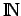

Inhalt Index DeskTop Bronstein

 Algebra und Diskrete Mathematik Logik Ausdrücke der Prädikatenlogik
Algebra und Diskrete Mathematik Logik Ausdrücke der Prädikatenlogik


Eine Interpretation eines Ausdrucks der Prädikatenlogik besteht aus
| Beispiel |
|
Sei P das zweistellige Prädikat, das im Individuenbereich  der natürlichen Zahlen die Beziehung
|
Ein Ausdruck der Prädikatenlogik heißt wahr für eine gegebene Interpretation, wenn für jede Ersetzung der freien Variablen durch Elemente aus dem Individuenbereich eine wahre Aussage entsteht. Ein Ausdruck der Prädikatenlogik heißt allgemeingültig oder Tautologie, wenn er für alle Interpretationen wahr ist.